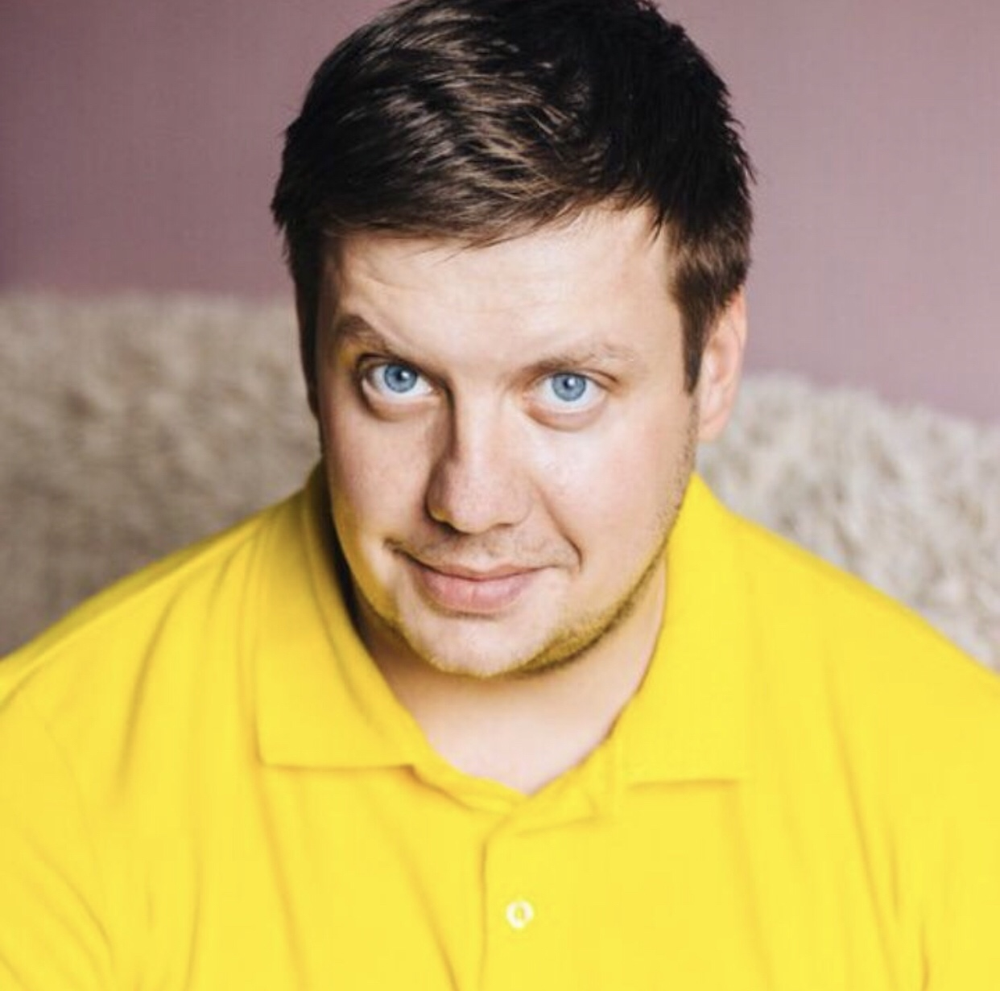

- Denis Lagodich
- My Contacts:
- e-mail: lagodichd@gmail.com
- tel: +375298790202,+375447304519(viber)
- Telegram: Lden4ikL
- Discord: Lden4ik
- Enrolled in the course to become a fronted developer. Before that I didn’t finish any courses,
but I have a great desire to study. I am engaged in self-training from various sources.
Easy to train, stress resistant
- My skills:
- online course Udemy "WEB Developer".
- At the moment I have no example.
- At the moment I am not doing any projects, as don’t have enough knowledge.
- I finished of the Belarusian State University of Transport of Gomel with diploma "electrical engineer"
by specialty "Systems transmission and distribution information".
- My English doesn’t level A2, but now I’m working on raising it.